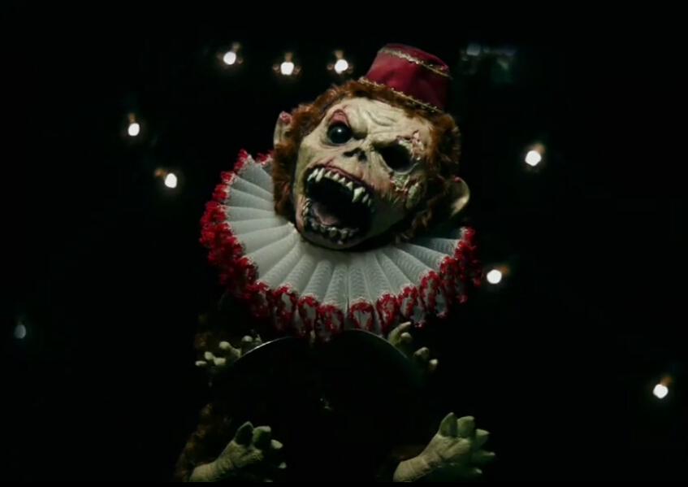
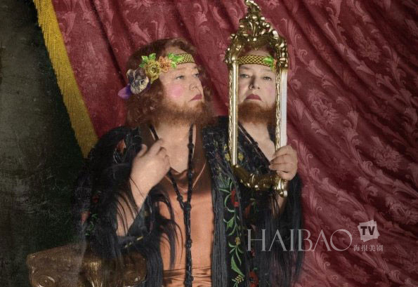

-
1/6 布鲁斯·韦恩（Bruce Wayne），人称蝙蝠侠（Batman）。是美国DC漫画旗下超级英雄，初次登场于《侦探漫画》（Detective Comics）第27期（1939年5月），是漫画史上第一位没有超能力的超级英雄。
-

2/6 布鲁斯·韦恩（Bruce Wayne），人称蝙蝠侠（Batman）。是美国DC漫画旗下超级英雄，初次登场于《侦探漫画》（Detective Comics）第27期（1939年5月），是漫画史上第一位没有超能力的超级英雄。
-

3/6 布鲁斯·韦恩（Bruce Wayne），人称蝙蝠侠（Batman）。是美国DC漫画旗下超级英雄，初次登场于《侦探漫画》（Detective Comics）第27期（1939年5月），是漫画史上第一位没有超能力的超级英雄。
-
4/6 布鲁斯·韦恩（Bruce Wayne），人称蝙蝠侠（Batman）。是美国DC漫画旗下超级英雄，初次登场于《侦探漫画》（Detective Comics）第27期（1939年5月），是漫画史上第一位没有超能力的超级英雄。
-

5/6 布鲁斯·韦恩（Bruce Wayne），人称蝙蝠侠（Batman）。是美国DC漫画旗下超级英雄，初次登场于《侦探漫画》（Detective Comics）第27期（1939年5月），是漫画史上第一位没有超能力的超级英雄。
-
6/6 布鲁斯·韦恩（Bruce Wayne），人称蝙蝠侠（Batman）。是美国DC漫画旗下超级英雄，初次登场于《侦探漫画》（Detective Comics）第27期（1939年5月），是漫画史上第一位没有超能力的超级英雄。